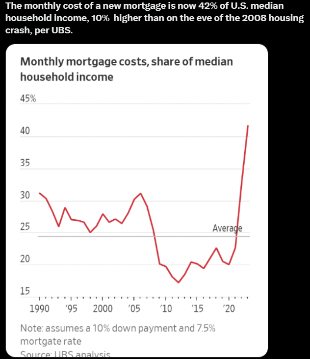

The Economic Landscape
Australia's economic growth, as indicated by the 0.4% GDP growth in Q2 of 2023, is a positive sign of economic resilience and recovery, especially in a global landscape that has been tumultuous due to the pandemic. The growth is driven by trade, indicating a robust external demand for Australian goods and services. However, a deeper dive into individual sectors and the domestic market might reveal areas that require policy attention to sustain this growth trajectory.
Productivity and Its Implication on Wages
Wage growth is a critical indicator of economic health, impacting everything from consumer spending to social stability. The recent data pointing to a structural weakness in productivity growth is concerning as it's closely tied to wage growth. When productivity is high, firms can afford to pay higher wages, which in turn stimulates the economy through increased consumer spending. The persistent low productivity growth could hence be a drag on wage growth, impacting the average Australian's purchasing power and living standards.
Another looming problem is the disparity between the inflation rate and the wage growth rate. While inflation has experienced a drastic climb since the end of COVID-19, the average wage growth is left far behind, resulting in a severe dent in the true purchasing power of many average Australian households.
Interest Rate Trends & Their Impact
After a decade and a few years of low interest rates aiming to stabilise the Australian economy after the 2008 Housing Crisis, the Reserve Bank of Australia (RBA) has been on a tightening cycle since April of 2022, raising interest rates to curb inflation and stabilize the economy. The cash rate target of 4.1% as of October 4, 2023, is a significant marker, showing a policy shift towards managing inflation which hit 6% in the June quarter 2023. Higher interest rates, while good for curbing inflation, can increase borrowing costs for individuals and businesses, potentially slowing down investment and spending.
Housing Market Dynamics
The housing market has seen a mix of trends, with prices rising but also showing some signs of cooling off as per recent data. On one side, a severe lack of building materials and numerous defaults from major construction companies are squashing demands for brand-new houses, as investors and new-home buyers gravitate toward purchasing already-built real estate. The projected 5% growth in property prices for the remainder of 2023 further reflects this fact. However, the growing divergence between wage growth and housing prices can lead to affordability concerns. The booming real estate sector may also risk creating a bubble if not balanced with wage growth and other economic indicators.
Looking at the Australian Economy locally, despite an increase in GDP growth in Mining, Real Estate, Wholesale Trade and Manufacturing, the high inflation rate and the RBA's decision to increase the Interest rate in response, means we've reached the peak of the current economic cycle. Looking ahead, we will most likely see the bankruptcy of inefficient businesses and generally a gradual cooling down of the Australian economy. This by itself looks perfectly fine for a healthy economy, because it is a natural cooling period in all market-driven economies. The real problem arises when global negative impacts have an effect on us while we're at an contractionary phase.
Global Influences: The Bigger Picture
Rising Bond Yields: A Global Phenomenon
Bond yields are a reflection of the economic mood in the financial markets. When the yield on a bond rises, it often signifies that investors are expecting higher interest rates due to stronger economic growth or inflation pressures. For instance, the US 10-year Treasury bond yield is closely watched by investors around the globe as it's seen as a bellwether for global interest rates and may signal shifts in monetary policy.

A rising bond yield can have a ripple effect across economies. It often leads to higher borrowing costs as interest rates increase in tandem with bond yields. This scenario can challenge sectors reliant on borrowing, like real estate and corporate investments, potentially slowing down economic growth. Moreover, higher yields can cause a shift of capital flow from riskier assets like equities to bonds, affecting stock markets worldwide. Understanding the dynamics of bond yields can equip investors and policymakers with insights to navigate the financial landscape.
The US Housing Pressure: A Cautionary Tale
The US housing market has seen its share of ups and downs, often reflecting broader economic trends. The 2008 financial crisis, triggered in part by a housing bubble, is a stark reminder of the interconnectedness of the housing sector with the larger economy. More recently, the US housing market has experienced price surges, driven by a combination of low-interest rates, limited housing supply, and strong demand, which somewhat mirrors Australia. 
A Bird's Eye View: Mapping the Economic Indicators
Australia is not an economic island; global events, like the rising bond yields and geopolitical tensions, can significantly impact the domestic economy. For instance, the tensions between major trading partners like China and the US can affect Australia's trade dynamics. Similarly, global geopolitical unrest can lead to fluctuations in commodity prices, affecting Australia's exports and imports, hence its trade balance and overall economic stability.
Looking Ahead
The pressure in the US housing market serves as a lesson for economies worldwide. Rising house prices without a corresponding rise in wages can lead to housing affordability issues, potentially locking many out of homeownership. Additionally, a speculative surge in housing prices can create a bubble, leading to financial instability if it bursts. For countries like Australia, monitoring the housing market and ensuring a balance between housing prices, wage growth, and interest rates is crucial to prevent a similar scenario and promote economic stability.